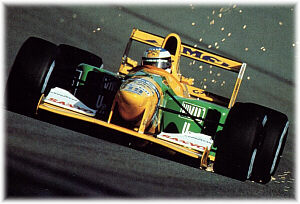
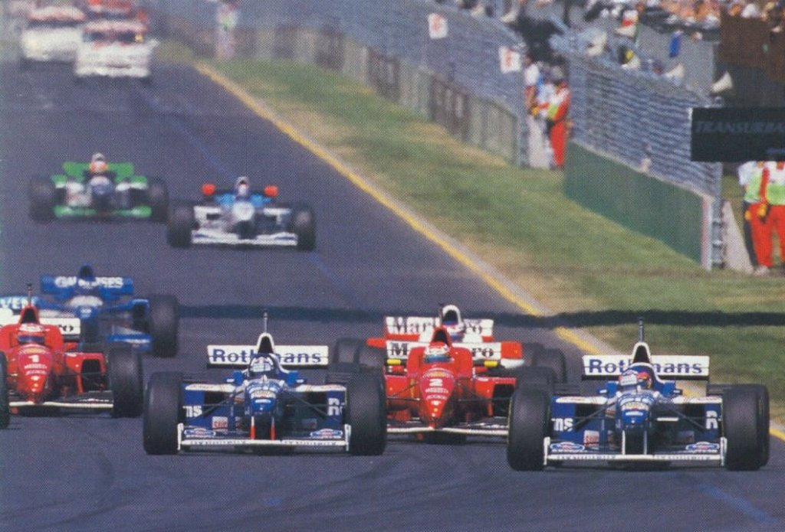
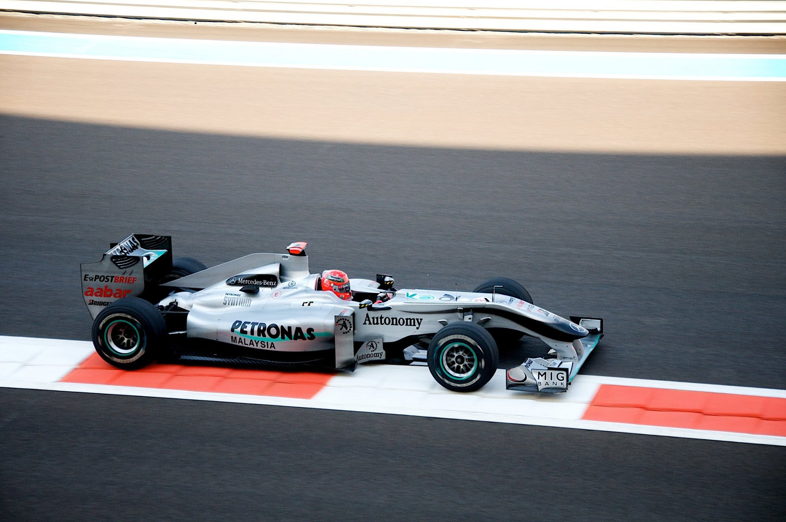

Bienvenue sur un site non-officiel sur le septuple champion du monde de Formule 1.
Micheal Schumacher est né à Hürth-Hermülheim en Allemagne dans une famille modeste. Il devint le plus jeune membre du club de karting et son père lui construisit le premier « vrai » kart de Michael à l'aide de pièces d'occasion et celui-ci gagne son premier championnat du club à l'âge de six ans. En 1988, il fait ses débuts en monoplace grâce au soutien financier d'un ami de la famille, Jurgen Dilk, et court en Formule Ford 1600 au sein de l'écurie Eufra. Seulement sixième du championnat d'Allemagne, il termine deuxième du championnat d'Europe derrière le Finlandais Mika Salo.
En 1991, Schumacher, qui a renoncé à tenter sa chance dans le championnat international de Formule 3000, pilote à temps plein pour Mercedes en voitures de sport. Cette fois, il dispose d'un programme pour la saison complète au volant d'une voiture qu'il partage avec Karl Wendlinger. Au mois d'août, le second pilote de l'équipe Jordan Seven-Up, Bertrand Gachot, se faisait arrêter pour avoir agressé un chauffeur de taxi et ne peut pus courir pour l'équipe. Alors le patron de la compétition de Mercedes proposa de tester Schumacher. L'équipe accepta et Michael Schumacher fut engagé jusqu'à la fin de la saison.
Lors de la séance de qualification du Grand Prix de Belgique, Schumacher signe le septième temps. Cela confirma le potentiel de Micheal Schumacher. Après la course, Benetton rachète le contrat de Schumacher et il se retrouve au volant d'une Benetton lors du Grand Prix d'Italie. Schumacher termine la saison avec 4 points en six course. En 1992, Michael Schumacher entame sa première saison complète en Formule 1 avec l'équipe Benetton. Il confirme qu'il est l'un des meilleurs pilotes du peloton en obtenant sa première victoire. Il marque 53 points en seize courses. La saison suivante, il remporte le Grand Prix du Portugal. Au total, il aura marqué 109 points lors de ses deux premières saisons.
En 1994 et 1995, Michael Schumacher réalise le miracle. Il remporte coup sur coup les deux championnats. Cependant, lors du Grand Prix d'Imola 1994, le double champion du monde Ayrton Senna se tue dans le virage Tamburello, au sixième tour, après seulement un tour de la relance de la course arrêtée après l'accident de Pedro Lamy et de JJ Letho au lancement de la course. Senna aurait pris le virage trop à l'inérieur et sa voiture aurait été déstabilisée par des bosses sur la piste et la voiture a foncé sur le mur extérieur du virage. Son bras de suspenssion se serait rompu et aurait transpersé la visière de son casque juste au dessus de son oeil droit et causant d'important dommages au cerveau de Senna. Son décès fut confirmé en soirée.
Pendant ce temps, Michael Schumacher remporte la victoire et lui et Benetton se font accusés de complot. Sans son compétiteur, Schumacher remporte le championnat.
Durant l'hivers 1995-96, Schumacher signe un contrat avec Ferrari qui était à l'époque en pleine reconstruction. La Ferrari, étant la seule voiture qui n'a pas de nez sur élevé, souffre d'un manque de performance. Malgré tout, il réussi à remporter trois course. L'objectif de Ferrari et de Schumacher était de remporter les deux championnats (Pilote et constructeur) avant l'an 2000. Malheureusement, le titre échape à Schumacher pendant quatre ans. En 1999, Michael Schumacher est victime d'un violent accident lors du premier tour du Grand Prix d'Angleterre. Il s'y fait une double fracture à la jambe droite. Il se fait donc remplacer par Mika Salo. Il put tout de même revenir au volant de sa Ferrari avant la fin de la saison. Par contre, il était déjà trop tard pour la chasse au titre et Mika Hakkinen remporta le titre contre le coéquipier de Schumacher.Voyez l'accident ici.
 En 2000, le duel entre Hakkinen et Schumacher reprend de plus belle. La bataille se solde par le troisième titre de Schumacher et le premier pilote de Ferrari à remporter le titre depuis 1979. Par la suite, il va gagner les quatres prochains championnat. Sa plus grande domination fut en 2002. Il remporta onze des dix-sept Grand Prix et fut sacré Champion du monde au Grand Prix de France, soit six courses avant la fin du championnat.
En 2000, le duel entre Hakkinen et Schumacher reprend de plus belle. La bataille se solde par le troisième titre de Schumacher et le premier pilote de Ferrari à remporter le titre depuis 1979. Par la suite, il va gagner les quatres prochains championnat. Sa plus grande domination fut en 2002. Il remporta onze des dix-sept Grand Prix et fut sacré Champion du monde au Grand Prix de France, soit six courses avant la fin du championnat.
En 2005, la vapeur s'est retournée contre Ferrari et Schumacher. Lors de la première course de la saison, il se qualifie en fond de grille et après 42 tours, il a un accrochage avec Nick Heifeld se qui met fin à sa course. De plus, la nouvelle F2005 est peu performante et n'offre pas le niveau de compétitivité attendu. Il ne remporte qu'un seul Grand Prix dans la saison. L'année suivante est meilleur pour le septuple champion du monde, mais son rival, beaucoup plus jeune que lui, réussi à lui voler le titre.
À la fin de la saison 2006, Michael Schumacher décide qu'il prendra sa retraite parce qu'il ne ressent plus de plaisir.
 Trois ans plus tard, Michael Schumacher fait son grand retour avec la jeune équipe Mercedes GP qui avait remporté le titre en 2009 sous le nom de Brawn GP. Il fait alors un retour avec son équipe d'origine. En effet, avant qu'il entre en F1, il coursait pour une équipe de GT motorisée et commanditée par Mercedes. Schumacher fit la promesse d'un retour digne de sa gloire d'antan. Cependant, en deux saison, il ne remporta aucun Grand Prix et fut plus lent que son coéquipier.

{kind=link}
{kind=link}
{kind=link}